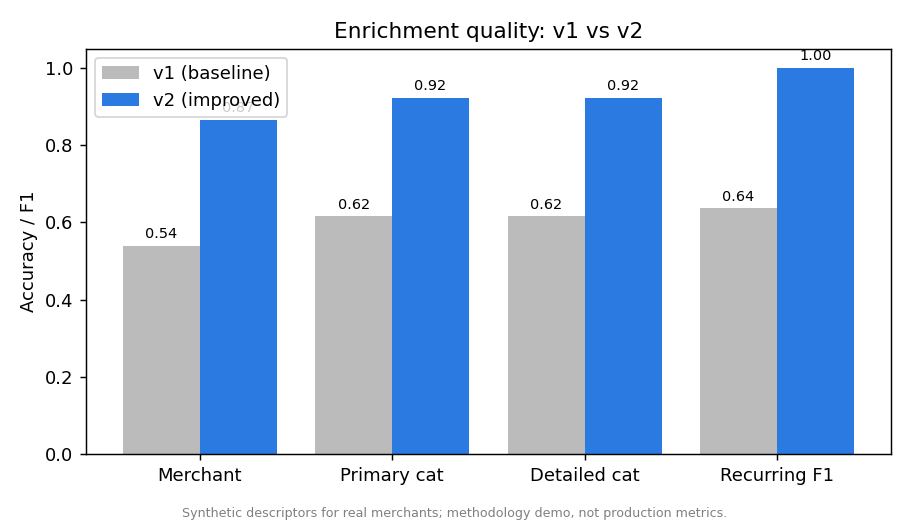
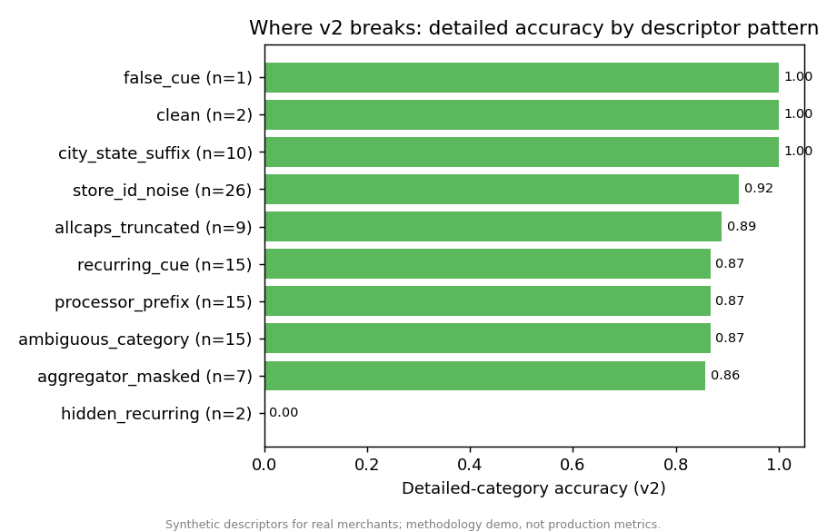
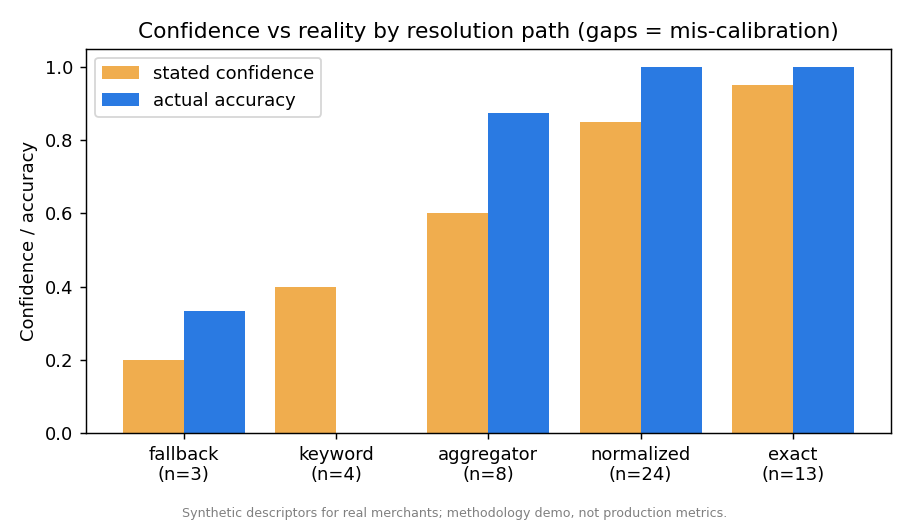

EnrichEval — A Quality Lab for Transaction Enrichment
What This Project Does
Open your banking app and look at a recent purchase. Behind the scenes, your bank received something ugly and cryptic, like:
SQ *BLUE BOTTLE COFFEE OAKLAND CA
A system has to turn that into something a person can read: the merchant is Blue Bottle Coffee, the category is Coffee, and it’s not a recurring subscription. That cleanup step is called enrichment, and thousands of finance apps depend on it being right.
Here’s the hard part. It’s fairly easy to build something that attempts this. It’s genuinely difficult to know how good your attempt actually is — because “correct” is fuzzy (is Blue Bottle as good as Blue Bottle Coffee?), and because the complaints you get are vague (“your categories are wrong for my users”). You can’t eyeball quality across millions of transactions.
This project isn’t an enrichment system. It’s the measuring tape for one. It’s a harness that tells you, in a principled way, exactly where an enrichment system is wrong, which failures matter most, and what to fix first.
Why This Matters in the Real World
Plenty of data science projects build a model and report a single accuracy number. But in production, the harder and more valuable job is often the evaluation: defining what “good” means, turning a fuzzy customer complaint into a specific engineering fix, and catching the moment a “better” model quietly breaks something it used to get right.
This project recreates that evaluation discipline end-to-end. It scores a deliberately simple enrichment system so the spotlight stays on the measurement, not the model.
A note on the data. The transaction strings here are synthetic descriptors for real merchants — made-up strings formatted to look like real bank statements, never actual cardholder data (which is private and contains personal information). So the specific numbers below are a demonstration of the method, not a production benchmark. The point is the approach, which carries over directly to real data. The category labels use Plaid’s public Personal Finance Category taxonomy (16 broad categories, 103 detailed ones).
The Approach in Plain English
I built the project in layers, each answering a question the layer before it raised.
1. Define “correct” before measuring it. I wrote a labeling rulebook that settles the judgment calls up front: Starbucks is Coffee, not Fast Food; Amazon is an online marketplace, not a superstore; when a delivery app like DoorDash hides the real restaurant, you label the app and admit the restaurant is unknowable. Then I hand-built a 52-transaction answer key covering the messy patterns that trip systems up — payment-processor prefixes (SQ *, PYPL *), delivery apps that mask the merchant, ALL-CAPS truncation, and store-ID noise.
2. Score two versions of the system. A first-pass enricher (v1) and an improved one (v2), so I could measure not just quality but change in quality.
3. Handle the “close enough” problem with a judge — and then check the judge. Strict text-matching would wrongly mark Blue Bottle as a miss against Blue Bottle Coffee. So a judge decides when two names mean the same merchant. Crucially, I don’t trust a judge I haven’t measured: I validated it against 24 human-labeled pairs, including deliberately tricky ones (is Amazon the same as Amazon Prime? No). The judge agreed with human judgment 92% of the time.
4. Turn a vague complaint into a ranked to-do list. This is the centerpiece. You type a real complaint — “categorization is wrong for a lot of my users” — and the harness finds the failing transactions, groups them by root cause, and ranks the groups by how much damage they do.
5. Catch silent regressions. Every time the model changes, the harness re-checks every transaction and flags any that used to be right and just became wrong.
What the Harness Found
Moving from v1 to v2 improved every headline number — merchant accuracy jumped from 54% to 87%, category accuracy from 62% to 92%. But the averages hide the interesting parts.

Finding 1 — Averages lie; quality is wildly uneven. Clean strings get enriched nearly perfectly. Transactions where a delivery app or payment processor masks the real merchant are where everything falls apart. A single accuracy number would have hidden that completely.

Finding 2 — The system doesn’t know when it’s wrong. A confidence score is only useful if it tracks reality. It doesn’t here, and unevenly: the guess-from-a-keyword path reports 40% confidence but is 0% accurate (confidently wrong, which is the worst kind — those answers look trustworthy and reach customers), while the delivery-app path is the opposite, underconfident. You only see this by comparing confidence to accuracy along each path, not in aggregate.

Finding 3 — “Better on average” can still break things. v2 improved 18 merchants but broke one: its smart new rule for delivery apps saw the PYPL (PayPal) prefix on a Steam game purchase and mislabeled it as PayPal, when v1 had correctly called it Steam. The rule that fixed many transactions quietly broke this one. This is the entire reason you run an evaluation on every change — a release that improves the average can still ship a specific, customer-visible regression.
The Complaint Investigator (the part I’m most proud of)
When a customer says “categorization is wrong for a lot of my users,” that’s unactionable. The harness turns it into this:
| Rank | Root cause | Share of errors | Was confident while wrong? |
|---|---|---|---|
| 1 | Genuinely ambiguous categories | 50% | No (low confidence) |
| 2 | Delivery app masks the merchant | 25% | Yes |
| 3 | Payment-processor prefix | 25% | Yes |
…plus a specific recommendation for each: add a tie-break rule to the rulebook, stop guessing the masked merchant and flag low confidence instead, extend the prefix-stripping rules. That’s the difference between “quality is bad” and “here are the three things to fix, in order.”
What I’d Do Differently in Production
- Build the answer key from real descriptors, with two people labeling a sample and measuring how often they agree — the synthetic seed here is a stand-in for that.
- Use the confidence calibration as a release gate — suppress or human-review the confidently-wrong paths instead of showing them to users.
- Add the regression check to CI so no model change ships without passing the per-transaction diff.
- Bring in transaction history for recurring detection — you can’t always tell a subscription from a single line of text; you need to see the pattern over time.
How It’s Built
Deliberately lightweight and fully reproducible. The whole thing runs offline for free, and the harness is model-agnostic — the same scoring, investigation, and regression layers work whether the enricher is a simple rules engine or a large language model, which you can swap in with one setting.
Stack
Python | pandas | scikit-learn | Matplotlib | Streamlit | Anthropic API (optional backend)